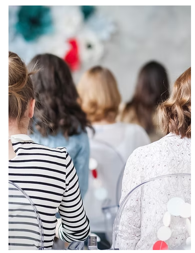
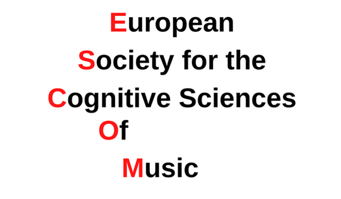
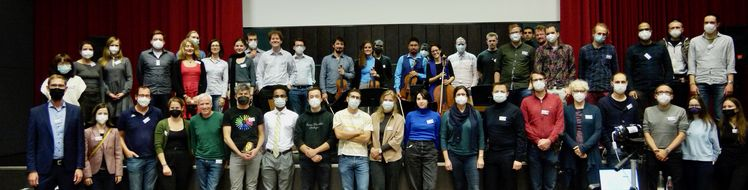
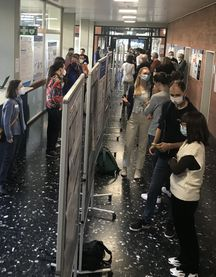
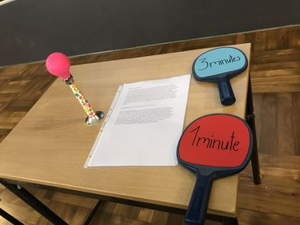

Verstehen
Komplexe Inhalte, Zielgruppen und Kommunikationsziele sorgfältig erfassen.
Bewerbungsportfolio · Transfer & Wissenschaftskommunikation
Ich verbinde wissenschaftliche Genauigkeit mit verständlichen Geschichten, visueller Gestaltung und interaktiven Formaten – damit aus Forschung Begegnung, Beteiligung und Wirkung entsteht.
.png)
Als promovierter Psychologe und Musikforscher kenne ich beide Seiten gelingender Wissenschaftskommunikation: die Komplexität wissenschaftlicher Arbeit – und die Neugier, die entsteht, wenn Menschen Forschung selbst erfahren können.
In meiner Arbeit habe ich adaptive Online-Tests entwickelt, Forschungsprojekte mit Praxispartner*innen umgesetzt, internationale Veranstaltungen organisiert und im Rahmen der Golden Ear Challenge Konzert, Experiment und Publikumsdialog miteinander verbunden.
Guter Transfer reduziert nicht die Qualität von Wissenschaft. Er reduziert die Distanz zu ihr.
Komplexe Inhalte, Zielgruppen und Kommunikationsziele sorgfältig erfassen.
Eine klare Sprache und den passenden visuellen, digitalen oder räumlichen Rahmen finden.
Menschen nicht nur informieren, sondern zum Ausprobieren, Fragen und Mitdenken einladen.
Ausgewählte Beispiele dafür, wie ich Forschung geöffnet, Kooperationen koordiniert und Begegnungsräume mitgestaltet habe.


Eine Konzertreihe, die Live-Musik, experimentelle Forschung und spielerische Publikumsbeteiligung verbindet – Wissenschaftskommunikation nicht als Vortrag, sondern als gemeinsames Erlebnis.
Projekt ansehen

ESCOM · internationales NetzwerkKonzeption und Leitung eines internationalen Symposiums zur Psychometrie musikalischer Fähigkeiten – von der Themenentwicklung bis zur Abstimmung mit Referierenden.
ESCOM entdecken Publikation ansehen ↗
Publikation ansehen ↗
Entwicklung und Veröffentlichung digitaler Testplattformen, nachvollziehbarer Analysen und offen zugänglicher Forschungsdaten – damit Ergebnisse nicht am Publikationsrand enden.



Fotos: Music & Hearing Health Workshop · UOLMitorganisation eines Forums, das Musikwissenschaft, Hörforschung, Gesundheitsversorgung und musikalische Praxis zusammenführte. Dazu gehörte auch die vollständige Gestaltung des Abstract-, Programm- und Schedule-Booklets.
Als Mitinitiator und Mitgründer entwickelte ich mit zwei Kolleg*innen ein webbasiertes Konzept, das Studierende anhand von Lernstil, Ambitionen und kognitiven Merkmalen zu Lernpartnerschaften zusammenführte. Wir gewannen die Universität für die Umsetzung, koordinierten die beteiligten Stellen und begleiteten die wissenschaftliche Evaluation.
Promovierendenvertretung im Hearing4all-Clusterboard · Mitorganisation der JRA Summer School 2022 einschließlich Abstract-, Programm- und Schedule-Booklet
JRA Summer SchoolPoster, Abstract- und Programm-Booklets übersetzen wissenschaftliche Inhalte in visuelle Orientierung. Die Auswahl zeigt einen Ausschnitt meiner Konzeption und Gestaltung wissenschaftlicher Kommunikationsmaterialien.
Horizontal bewegen oder ein Motiv anklicken.
Interaktive Hörtests, Publikumsforschung und challenge-basierte Vermittlung machen abstrakte Fragen unmittelbar erfahrbar.
Erfahrung mit Workshops, Summer Schools, Symposien und internationalen Tagungen – von Konzeption und Abstimmung bis Durchführung und Auswertung.
Zusammenarbeit mit Wissenschaftler*innen, Hochschulen, Industriepartnern, Hörversorgung, Kulturschaffenden und Teilnehmenden.
R und psychTestR, Web-Prototyping, Open-Source-Publikation sowie Gestaltungserfahrung mit Adobe-, Affinity- und Office-Werkzeugen.
Wählen Sie eine kurze Hör-Challenge. Der Test öffnet sich in einem neuen Tab und wird auf einer externen Forschungsplattform durchgeführt.
Wählen Sie eine Perspektive
Können Sie einer musikalischen Stimme folgen, obwohl andere Instrumente gleichzeitig spielen?
Drei anschlussfähige Richtungen, in denen bestehende Oldenburger Transferkonzepte gemeinsam ausgebaut werden könnten.
Anknüpfend an das Schlaue Haus könnten mobile Pop-up-Stationen Forschung zusätzlich in Quartiere, Kulturorte, Schulen und den Alltag der Region tragen.
Anknüpfung: Schlaues HausDigitale Mini-Experimente und offene Datenerhebungen könnten BürgerLabor, Science Bench und Veranstaltungsformate um kurze Beteiligungsangebote ergänzen.
Anknüpfung: BürgerLabor & Citizen ScienceEin modularer Werkzeugkasten aus Beratung, Vorlagen und Transfergeschichten könnte Forschende bei Zielgruppenwahl, Formatentwicklung und crossmedialer Kommunikation unterstützen.
Anknüpfung: Beratung & DialogformateBereit für den nächsten Schritt
Ich freue mich darauf, meine Ideen, Erfahrungen und Perspektiven im persönlichen Gespräch zu vertiefen.